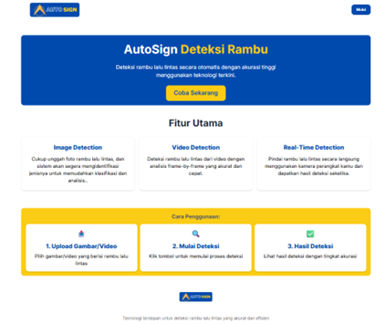
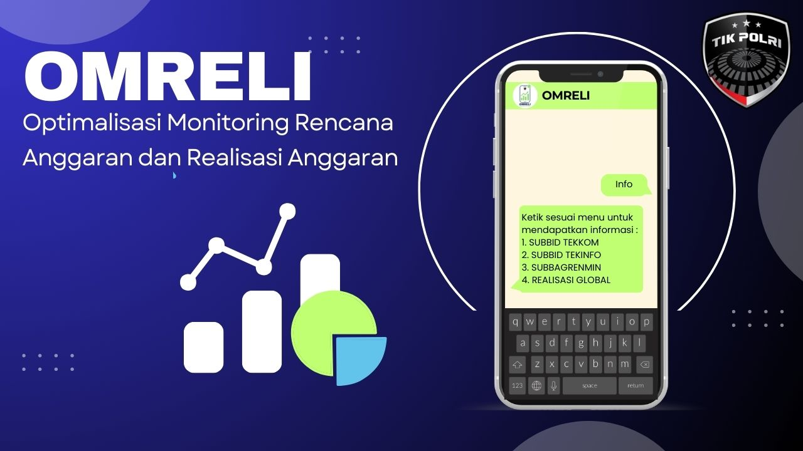
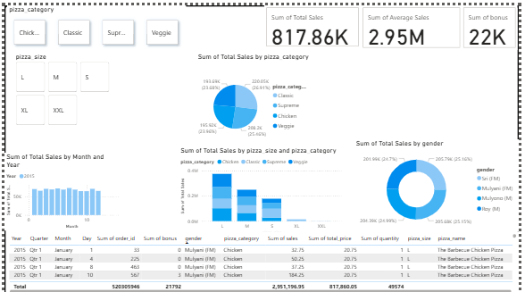
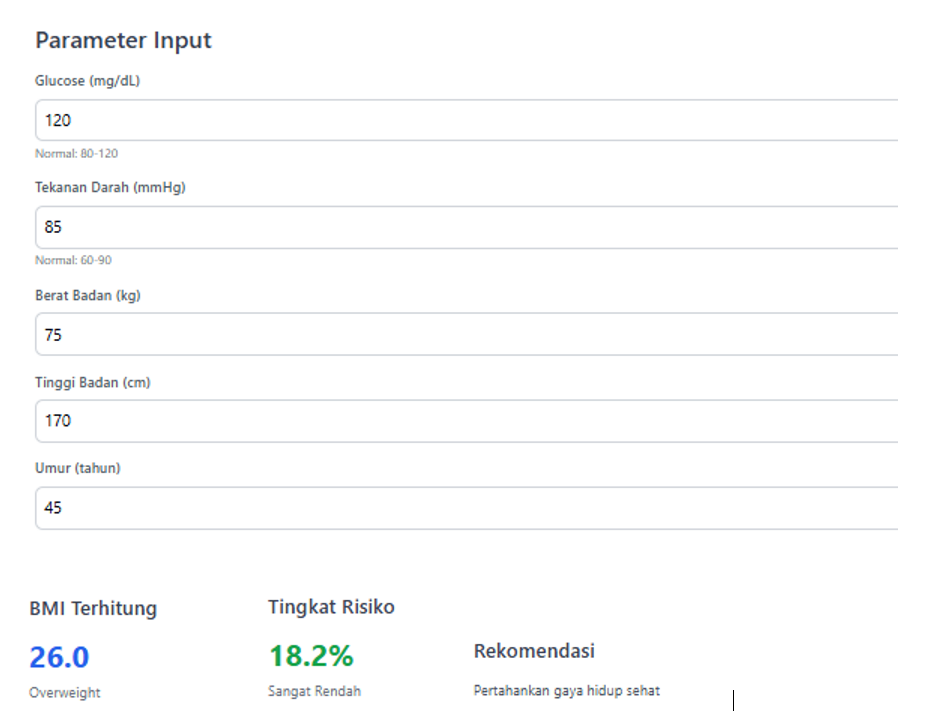
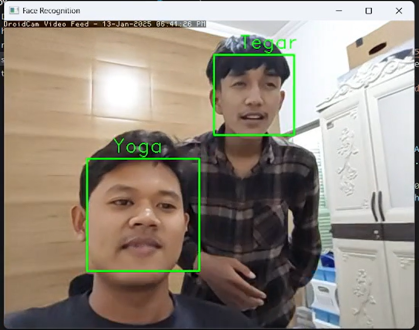

Mahasiswa Informatika Universitas Teknologi Yogyakarta dengan minat pada Artificial Intelligence, Data Analytics, dan Web Development.
Saya adalah mahasiswa aktif Program Studi Informatika Universitas Teknologi Yogyakarta. Memiliki pengalaman magang di Bid TIK Polda DIY dan pernah menjadi ketua proyek mata kuliah Jaringan Syaraf Tiruan. Terbiasa mengembangkan sistem berbasis AI, data, dan web.
Perjalanan akademik & profesional
Mengembangkan sistem WhatsApp Auto-Response untuk membantu layanan komunikasi internal berbasis keyword.
Memimpin tim dalam proyek SLP, MLP, CNN, dan RNN, termasuk pembagian tugas, training model, dan analisis performa.
Beberapa project yang pernah saya kerjakan

Real-time traffic sign detection menggunakan YOLOv8 untuk object detection berbasis deep learning. Mendukung input gambar, video, dan kamera dengan visualisasi bounding box serta confidence score..
AI
Sistem WhatsApp auto-response berbasis app untuk membalas pesan otomatis menggunakan keyword matching. Dirancang untuk meningkatkan efisiensi komunikasi layanan internal secara real-time..
Web
Interactive business intelligence dashboard menggunakan Power BI untuk analisis, transformasi, dan visualisasi data. Menyajikan insight melalui grafik dinamis, filter interaktif, dan laporan statistik otomatis.
Data
Web-based expert system menggunakan metode logika fuzzy untuk prediksi resiko penyakit paru-paru. Dibangun dengan Flask serta perhitungan derajat keanggotaan untuk menghasilkan rekomendasi keputusan.
AI
Sistem pengenalan wajah real-time menggunakan Computer Vision untuk identifikasi dan verifikasi pengguna berbasis kamera. Dibangun dengan Python, OpenCV, dan Deep Learning.
AI